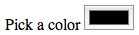
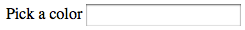

{{LearnSidebar}}
All web developers learn very quickly (and sometimes painfully) that the Web is a very rough place for them. Our worst curse is legacy browsers. Okay, let’s admit it, when we said “legacy browser” we all have in mind Safari or old versions of Internet Explorer, but they are far from the only ones. In the mobile world, when neither the browser nor the OS can be updated such as on older Android phones or iPhones, the stock browsers that don’t update are also legacy browsers.
Dealing with this wilderness is part of the job. Fortunately, there are a few tricks to know that can help you to solve most of the problems caused by legacy browsers. And HTML5 {{htmlelement(‘input’)}} types don’t fail when not supported: they fall back to type=text.
To understand common patterns, it helps to read browser documentation. If you are reading this on MDN, you are at the right place to start. Just check the support of the elements (or DOM interface) you want to use. MDN has compatibility tables available for most elements, properties and APIs that can be used in a web page. There are other resources that can be amazingly helpful:
WebKit: Because there are several different editions of this engine, things are a little trickier.
Because HTML forms involves complex interaction, there is one rule of thumb: keep it simple, also known as the “KISS principal”. There are so many cases where we want forms that are “nicer” or “with advanced functionality”, but building efficient HTML Forms is not a question of design or technology. Rather, it’s about simplicity, intuitiveness, and ease of user interaction. The tutorial, forms usability on UX For The Masses, explains it well.
Graceful degradation and progressive enhancement are development patterns that allow you to build great stuff by supporting a wide range of browsers at the same time. When you build something for a modern browser, and you want to be sure it will work, one way or another, on legacy browsers, you are performing graceful degradation.
Let’s see some examples related to HTML forms.
The input types added in HTML5 are all useable, even in ancient browsers, because the way they degrade is highly predictable. If a browser does not know the value of the {{htmlattrxref(“type”,“input”)}} attribute of an {{HTMLElement(“input”)}} element, it will fall back as if the value were text.
| Supported | Not supported |
|---|---|
|  |  |
There are two ways to define buttons within HTML forms:
button, submit, reset or imageThe {{HTMLElement(“input”)}} element can make things a little difficult if you want to apply some CSS by using the element selector:
If we remove the border on all inputs, can we restore the default appearance on input buttons only?
input {
/* This rule turns off the default rendering for the input types that have a border,
including buttons defined with an input element */
border: 1px solid #CCC;
}
input[type="button"] {
/* This does NOT restore the default rendering */
border: none;
}
input[type="button"] {
/* These don't either! Actually there is no standard way to do it in any browser */
border: auto;
border: initial;
}
input[type="button"] {
/* This will come the closest to restoring default rendering, when supported. */
border: revert;
}See the global CSS {{cssxref(‘revert’)}} value for more information.
The {{HTMLElement(“button”)}} element suffered from two issues that are now resolved:
submit as the default value for the {{htmlattrxref(“type”,“button”)}} attribute. While resolved in all modern browsers, it is still recommended to always set the {{htmlattrxref(“type”,“button”)}} attribute on {{HTMLElement(“button”)}} elements.<!-- Clicking this button sent "<em>Do A</em>" instead of "A" in some cases -->
<button type="submit" name="IWantTo" value="A">
<em>Do A</em>
</button>Choosing one solution or the other is up to you based on your project’s constraints.
One of the big issues with HTML Forms is styling form widgets with CSS. Form controls appearance is browser and operating system specific. For example, the input of color type looks different in Safari, Chrome and Firefox browser, but the color picker widget is the same in all browsers on a device as it opens up the operating system’s native color picker.
It’s generally a good idea to not alter the default appearance of form control because altering one CSS property value may alter some input types but not others. For example, if you declare input { font-size: 2rem; }, it will impact number, date, and text, but not color or range. If you alter a property, that may impact the appearance of the widget in unexpected ways. For example, [value] { background-color: #ccc; } may have been used to target every {{HTMLElement(“input”)}} with a value attribute, but changing the background-color or border radius on a {{HTMLElement(“meter”)}} will lead to likely unexpected results that differ across browsers. You can declare {{cssxref(‘appearance’, ‘appearance: none;’)}} to remove the browser styles, but that generally defeats the purpose: as you lose all styling, removing the default look and feel your visitors are used to.
To summarize, when it comes to styling form control widgets, the side effects of styling them with CSS can be unpredictable. So don’t. As you can see from the complexity of the Property compatibility table for form widgets article, it’s very difficult. Even if it’s still possible to do a few adjustments on text elements (such as sizing or font color), there are always side effects. The best approach remains to not style HTML Form widgets at all. But you can still apply styles to all the surrounding items. And, if you must alter the default styles of your form widgets, define a style guide to ensure consistency among all your form controls so user experience is not destroyed. You can also investigate some hard techniques such as rebuilding widgets with JavaScript. But in that case, do not hesitate to charge your client for such foolishness.
CSS and JavaScript are awesome technologies, but it’s important to ensure you don’t break legacy browsers. Before using features that aren’t fully supported in the browsers your targeting, you should feature detect:
Before styling a replaced form control widget, you can check to see if the browser supports the features you plan on using {{cssxref(‘@supports’)}}:
@supports (appearance: none) {
input[type="search"] {
appearance: none;
/* restyle the search input */
}The {{cssxref(‘appearance’)}} property can be used to display an element using platform-native styling, or, as is done with the value of none, remove default platform-native based styling.
One of the biggest problems is the availability of APIs. For that reason, it’s considered best practice to work with “unobtrusive” JavaScript. It’s a development pattern that defines two requirements:
The principles of unobtrusive JavaScript (originally written by Peter-Paul Koch for Dev.Opera.com) describes these ideas very well.
There are many cases where a good “polyfill” can help a lot by providing a missing API. A polyfill is a bit of JavaScript that “fills in the holes” in the functionality of legacy browsers. While they can be used to improve support for any functionality, using them for JavaScript is less risky than for CSS or HTML; there many cases where JavaScript can break (network issues, script conflicts, etc.). But for JavaScript, if you work with unobstructive JavaScript in mind, if polyfills are missing, it’s no big deal.
The best way to polyfill missing API is by using the Modernizr library and its spin-off project: YepNope. Modernizr is a library that allows you to test the availability of functionality in order to act accordingly. YepNope is a conditional loading library.
Here is an example:
Modernizr.load({
// This tests if your browser supports the HTML5 form validation API
test : Modernizr.formvalidation,
// If the browser does not support it, the following polyfill is loaded
nope : form-validation-API-polyfill.js,
// In any case, your core App file that depends on that API is loaded
both : app.js,
// Once both files are loaded, this function is called in order to initialize the App.
complete : function () {
app.init();
}
});The Modernizr team conveniently maintains a list of great polyfills. Just pick what you need.
Note: Modernizr has other awesome features to help you in dealing with unobstructive JavaScript and graceful degradation techniques. Please read the Modernizr documentation.
Even though scripts like Modernizr are very aware of performance, loading a 200 kilobyte polyfill can affect the performance of your application. This is especially critical with legacy browsers; many of them have a very slow JavaScript engine that can make the execution of all your polyfills painful for the user. Performance is a subject on its own, but legacy browsers are very sensitive to it: basically, they are slow and the more polyfills they need, the more JavaScript they have to process. So they are doubly burdened compared to modern browsers. Test your code with legacy browsers to see how they actually perform. Sometimes, dropping some functionality leads to a better user experience than having exactly the same functionality in all browsers. As a last reminder, just always think about the end users.
As you can see, considering browser and operating system default form control appearance is important. There are many techniques to handle these issue; however mastering all of them is beyond the scope of this article. The basic premise is to consider whether altering the default implementation is worth the work before embarking on the challenge.
If you read all the articles of this HTML Forms guide, you should now be at ease with using forms. If you discover new techniques or hints, please help improve the guide.